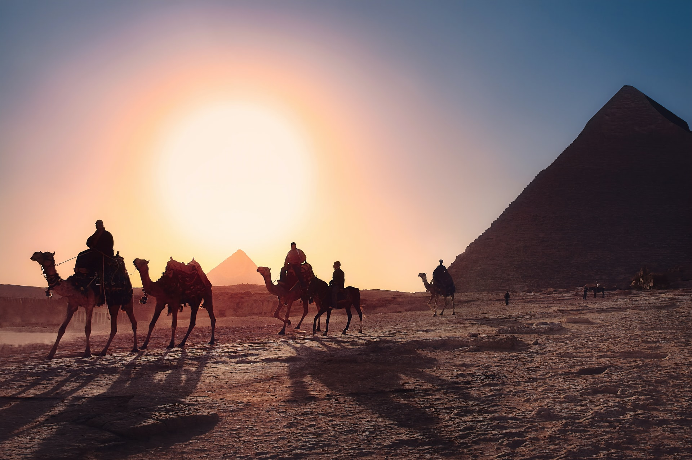
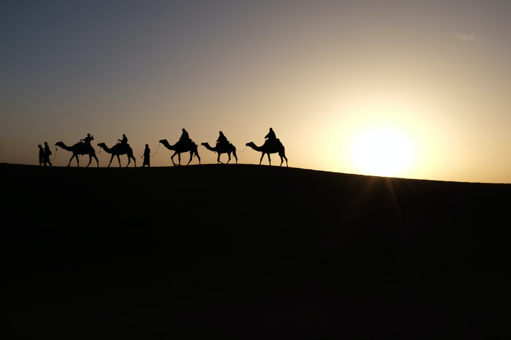
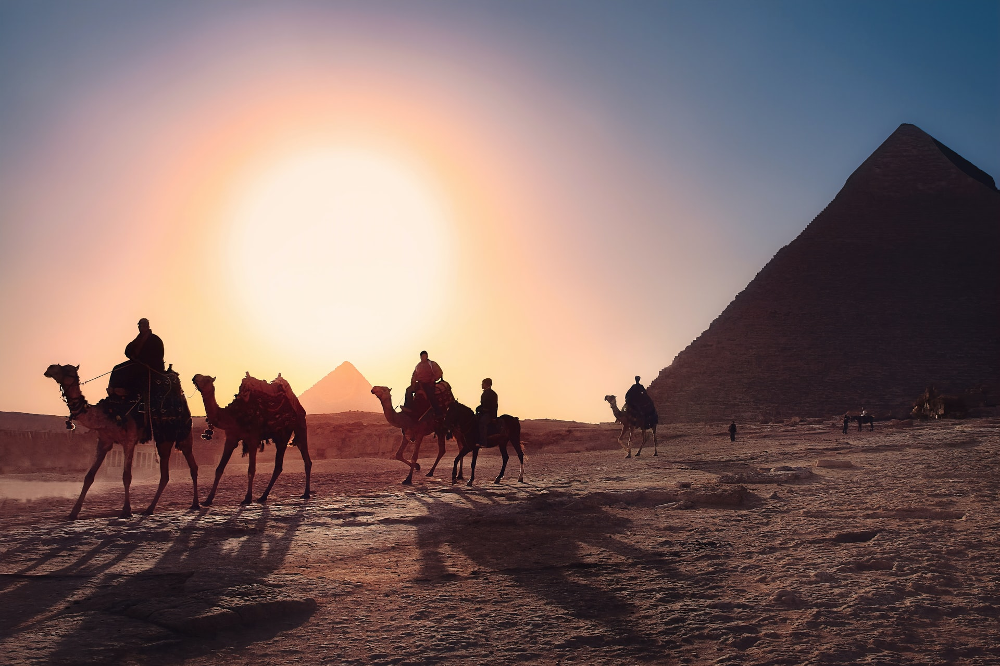
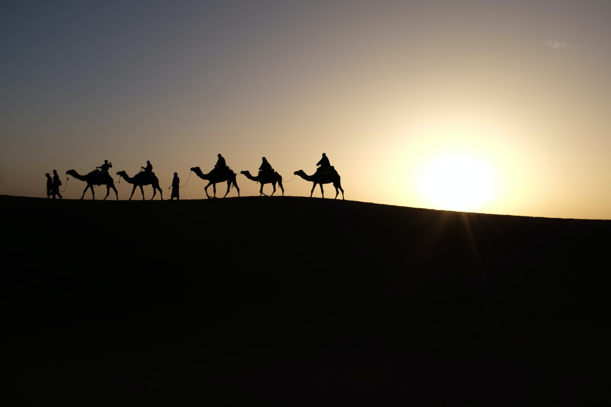

Helwan
Helwan Suburb is located thirty kilometers from the heart of Cairo to the east of the Nile River, which is about four kilometers from its bank, and is forty meters above sea level.
More... 




It is one of the types of tourism, which is travel for the purpose of treatment and recreation in health resorts in various parts of the world
Medical tourism is one of the types of tourism
Medical tourism depends on the use of specialized clinics, medical centers or modern hospitals that have medical equipment and highly qualified human cadres, which are spread all over the world.

It is a type of tourism in which a person goes to places famous for providing natural health care, such as hot springs, sulfur water baths, hot sand and mud, with the intention of treatment, relaxation and entertainment. Medical tourism is widespread in many countries of the world, and our Arab region is famous for its famous medical tourism destinations such as Jordan and Egypt, and some oases of the Maghreb, which have received the attention of Westerners since the mid-nineteenth century. Medical tourism was prescribed to treat mental illnesses, and with the advent of the twenty-first century, it turned into an industry, on which some countries depend mainly for their economy.
Welcome To Medical Tourism in Egypt
Egypt is distinguished by its unique geographical location, as it is in the middle of the Arab world and is considered one of the most important medical destinations for tourists coming from Arab countries or coming from Europe.
Egypt is distinguished by its multiple medical expertise in all health fields, in addition to natural healing places, archaeological sites, and natural landscapes.
In Egypt, there are hundreds of mineral springs and natural medical wells rich in mineral and sulfur elements with varying temperatures and other healing elements such as sodium carbonate, magnesium and iron.
Egypt also has water resources for hospitalization purposes with a suitable salinity ratio to treat some different diseases, as well as fresh drinking water wells.
Egypt has sand dunes that are equal in value with the importance of mineral water from a therapeutic point of view, and it contains radioactive elements that are useful in rheumatic diseases and diseases of the spine.
1 - The presence of many hospitals, medical examination centers and all modern medical equipment that helps to perform serious surgeries and guarantees them high success rates, as it has the most skilled doctors in the world.
2 - Egypt is one of the least expensive tourist destinations for treatment and its prices are very suitable. Medical tourism agencies also contribute subsidized prices to patients and include a range of distinguished medical examinations.
The state also supports these tourism agencies with the aim of increasing the number of tourists and stimulating tourism in general.
3 - Egypt contains a large number of tourist sites that help in entertaining patients before and after treatment.
It also contains popular destinations of historical, heritage and religious importance such as Hurghada - Sharm El Sheikh - Marsa Alam - Luxor - Dahab.
4 - There are many healing centers in Egypt with the use of alternative treatment such as sulfur springs and black sand therapy.
The Most Famous Areas For Medical Tourism in Egypt
Helwan Suburb is located thirty kilometers from the heart of Cairo to the east of the Nile River, which is about four kilometers from its bank, and is forty meters above sea level.
More...
Bahariya Oasis is located in Giza Governorate, 365 km southwest of the city of Giza.
The region brings together the elements of historical and archaeological tourism, wonderful elements of medical tourism and environmental healing
Siwa is located about 300 km west of Marsa Matruh. It occupies a leading position among the ideal places for medical tourism and natural healing in Egypt. It is characterized by the charming poetic calm, the purity of the air, the clarity of the sky, and the moderate temperature.
More...
New Valley Governorate is one of the largest governorates in Egypt, as it occupies about 37.6% of the total area of Egypt
The history of Egypt is embodied in all ages in the New Valley, where many antiquities from the Pharaonic, Ptolemaic, Roman, Coptic and Islamic eras spread.
It is about 28 km south of Al-Kharga city, and it is deep self-flowing wells, originating at a depth of 1,000 meters, and its temperature is 28 degrees Celsius, surrounded by green areas. The laboratory analysis proved that its water contains several mineral elements of therapeutic benefit, and soft sand dunes spread near it that can be used for treatment by burial in the sand.
More...
Mot wells
It is located three kilometers from the city of Mut, the capital of Dakhla. It is a group of self-flowing wells, originating from a depth of 1224 meters
These wells are distinguished by their hot water, which reaches a temperature of 43 degrees Celsius. According to laboratory analyzes conducted by the health affairs in the governorate, the waters of these wells contain many
well 6
This deep self-flowing well is located six kilometers to the west of the city of Farafra, and its water temperature is 24 degrees Celsius throughout the year
A tourist village was established near it, which includes a restaurant, a cafeteria, a swimming pool and green spaces. The elements of natural and environmental tourism meet in the area.
The flower of the Egyptian south and the creation of an international festival, and it has many medical tourism sites.
More...Sinai has many hot water springs, such as the Pharaoh’s Bath and the Moses Baths, which are of historical importance, and these baths have a therapeutic importance due to their containing sulfur water.
More...